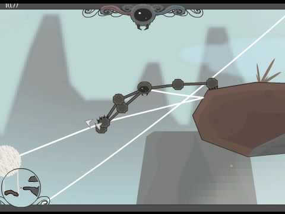

Flash
| PC | ConsoleSome of the earliest flash games I remember playing.
Games that are already featured on another page are not mentioned here.
With some exceptions, most of these should be available to play on Flashpoint, a flash emulator/archive.
GROW (series)
Released: 2002
Developer: On Nakayama (EYEZMAZE)
A imaginitive and creative series of puzzle games based around choosing certain options in the correct order. Strange and fun, although it can be difficult at times.
Tri-achnid
Released: 2006
Developer: Komix & Bluebaby
Follows a spider-like creature as it attempts to save its children. This game (and especially its soundtrack) mean a lot to me.

Orisinal (website)
Created: 2000
Developer: Ferry Halim
A website featuring a variety of simple games with cute animals and solid gameplay.
Neopets (website)
Released: 2003
Publisher: Neopets
Neopets featured a wide variety of flash games, which have now been converted to HTML5. Most are based on existing games. Neopets also had a large amount of sponsored games based on things such as food brands and upcoming movies. My favorites were Petpetsitter, Meepit Juice Break, Fearie Bubbles, and Freaky Factory.

Nickelodeon Wildlife Rescue (series)
Released: 2003
Publisher: Nickelodeon
The Wild Thornberrys Africa Wildlife Rescue and Rugrats Go Wild Wildlife Rescue were flash games hosted on Nickelodeon's website. I played these a LOT (particularly the Rugrats one), but they seem to have become lost media.